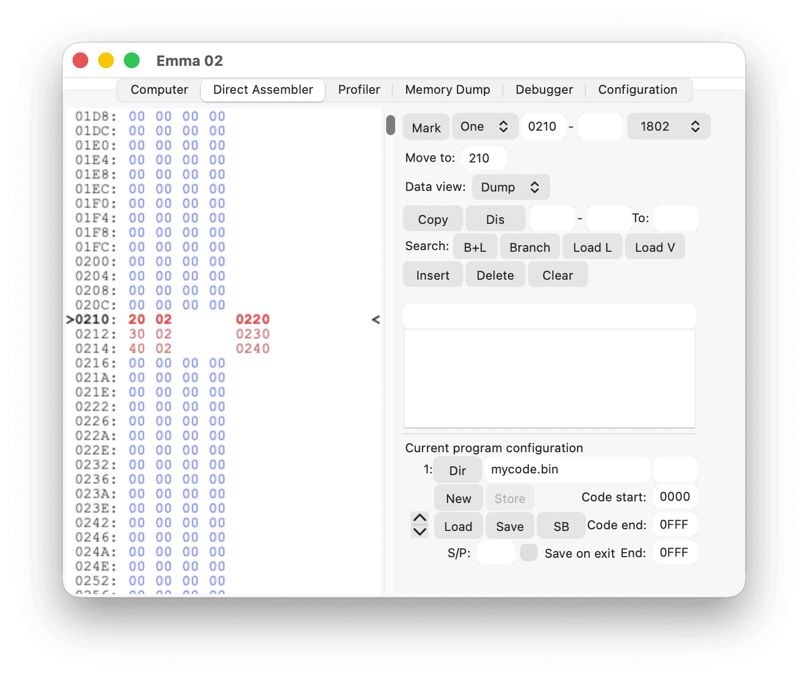
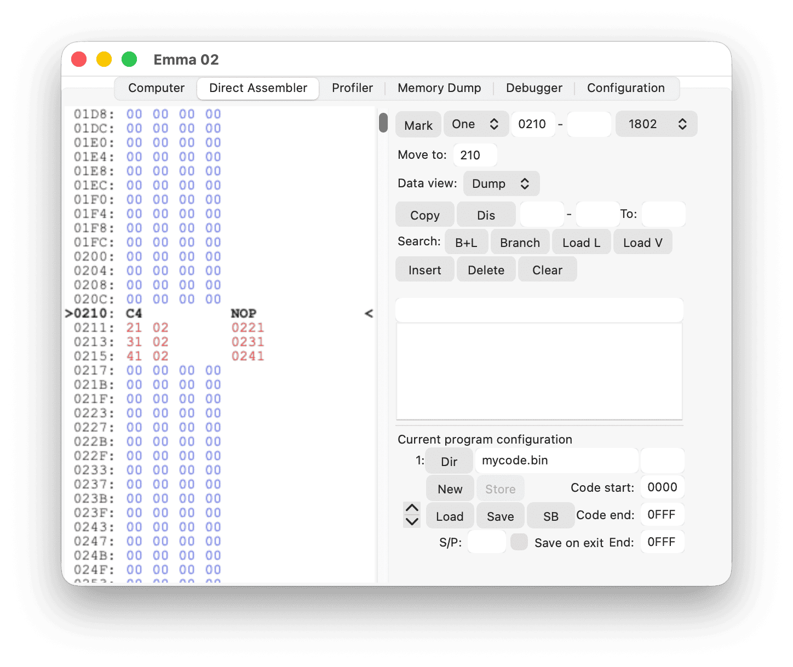

Although less commonly used than Branch Data, reversed branch data can be useful in 1802 code where the first byte is the lower 8 bits and the second byte is the higher 8 bits of a 16-bit address.
For these cases, reversed branch data bytes can be defined in the Direct Assembler by marking the data bytes as Rev Br via the procedure described in the Memory Type Selection section. By doing this, the reversed branch data will be corrected when using insert, delete, or copy commands. All reversed branch data will be shown in red text.
For example, inserting at address 0210 (hexadecimal) in the code below:

will result in:
